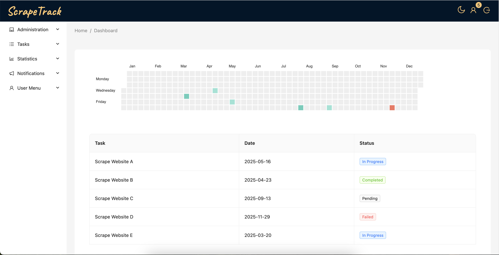
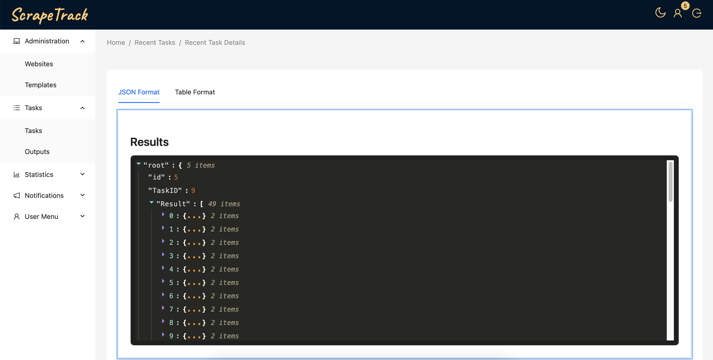
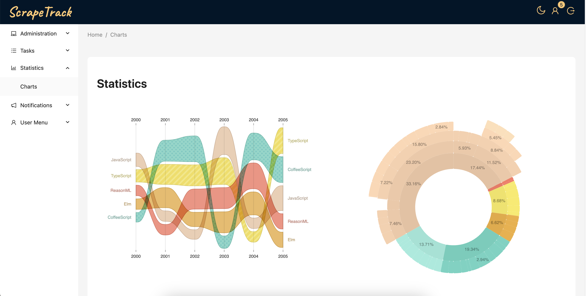

Fast. Extensible. Visual.
ScrapeTrack is a modern platform designed to simplify web scraping. Built using Golang for performance, React for sleek UIs, and a Chrome Extension for real-time extraction – all connected to a PostgreSQL database for reliable storage.


